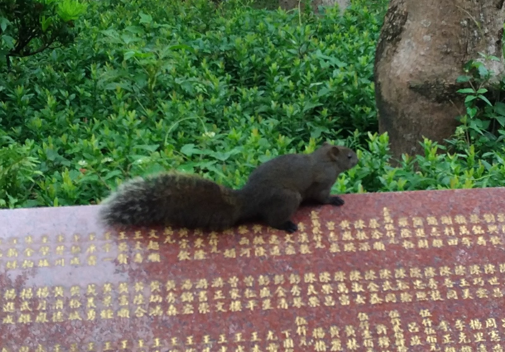
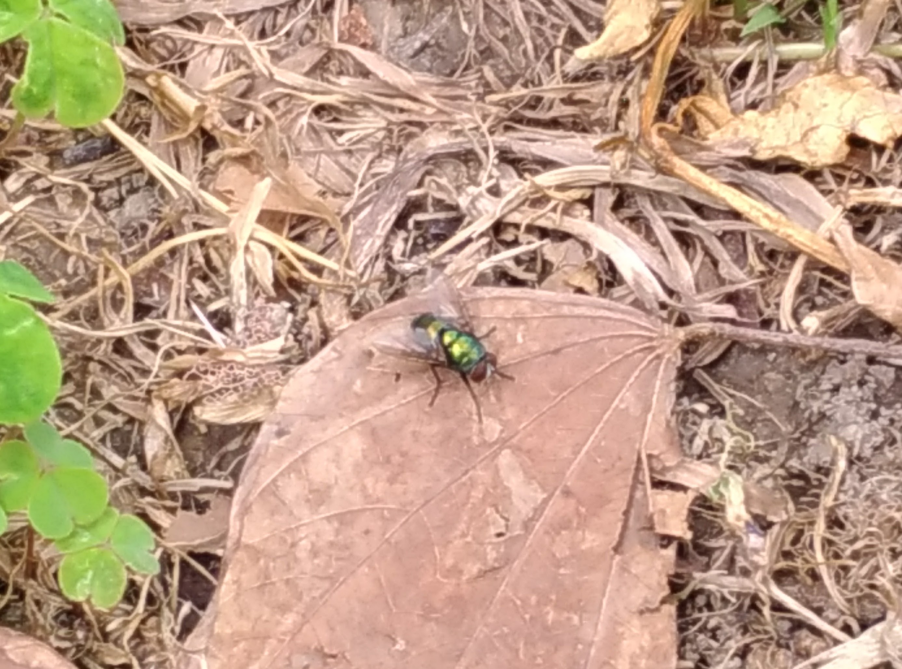
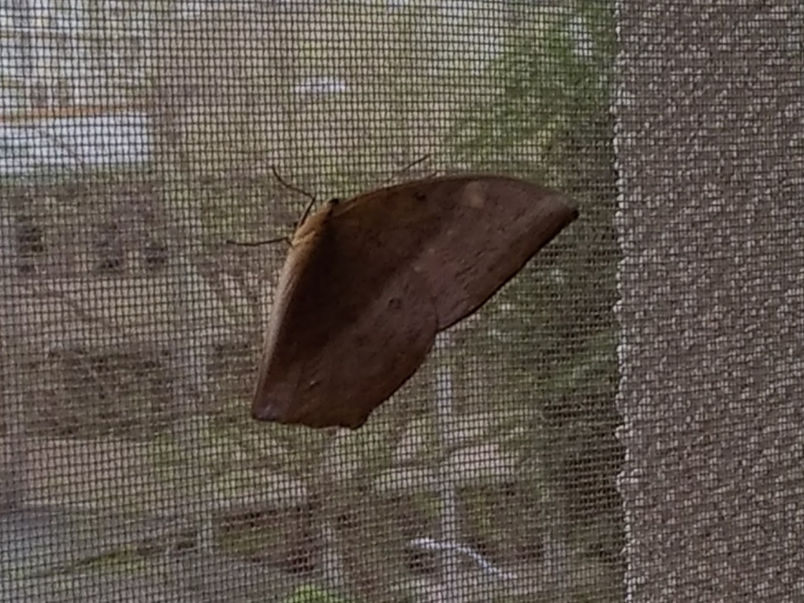

校園常見動物
以下物種皆是國北教大常見動物，照片皆為我在國北教大校園內攝影
| 種類 |
照片 |
物種簡介 |
|
|---|---|---|---|
| 貓 |  |
貓科 貓屬 貓成為世界上最為廣泛的寵物之一，飼養率僅次於犬，但同時也是危害十 分廣泛的外來種，由於獵捕的習慣，威脅著很多原生鳥類、齧齒類的生存 。更直接的風險是因狩獵而感染野外病菌的貓，會引入例如狂犬病等等進 入人類生活圈，因此對飼主知識技術與社會責任要求也較高，長期飼育的 貓的平均壽命為12年以上（相等於人類64歲），歷史上最長壽的貓則達38 歲（等於人類168歲，來自美國德州）。 |
|
| 赤腹松鼠 |  |
松鼠科 麗松鼠屬 台灣中海拔的原始闊葉林，常期遭受大量砍伐。由於赤腹松鼠極能適應人 類干擾後的環境，因此身不論是公園、果園、竹林、次生林、闊葉林、甚 至是針葉林，都可以發現赤腹松鼠的蹤跡。赤腹松鼠的食物是種籽，果實 、嫩芽、花朵，偶而捕食昆蟲。赤腹松鼠會發出許多種聲音，如：「咕、 啾、卡戚、霍」等代表聯絡與警告的訊息。近年來，由於人類大肆破壞台 灣的生態環境，迫使赤腹松鼠改變食性，且在缺乏天敵與其他動物相互抑 制下大量繁殖，赤腹松鼠在人工造林內啃咬樹皮，造成大量林業損失。 |
|
| 屋頂鼠 |
鼠科 大家鼠屬 活躍於高層、屋頂空隙、管道及槽溝；擅攀爬，極少游泳或挖洞；建築物 的頂樓、樓頂空間及橫樑等出沒；晝伏夜出。盜取食物、咬壞衣物，會傳 播鼠疫等多種疾病，對人類危害極大。平常見到會飛簷走壁的就是這種老 鼠。 |
||
| 綠頭蒼蠅 |  |
麗蠅科 麗蠅屬 世界性分佈。成蟲體長 6～13毫米，多呈藍色，不十分光亮。體表粉被較密 ，尤以胸部為甚。幼蟲以屍食為主，滋生於畜骨堆、畜毛堆、動物屍體和腐 敗質中，冬季幼蟲在垃圾堆或雜骨堆中越冬。成蟲一般春季和晚秋出現，為 室外蠅類。 |
|
| 枯葉蝶 |  | 蛺蝶科 枯葉蝶屬 成蟲多見於潮濕的森林，好吸食樹液、腐敗的果實；飛翔相當迅速。以類似 枯葉而聞名，顏色、形狀無一不像，連葉脈、角度，甚至是破損處也都唯妙 唯肖。腹面底色多為褐色、黃褐色、紅褐色等，依品種差異而有不同。有的 亦散布著枯黃色、苔綠色斑點。前翅頂內側至後緣中央及後翅前緣中央至後 翅尾突有一深色直條紋，擬似葉脈的中肋。 |